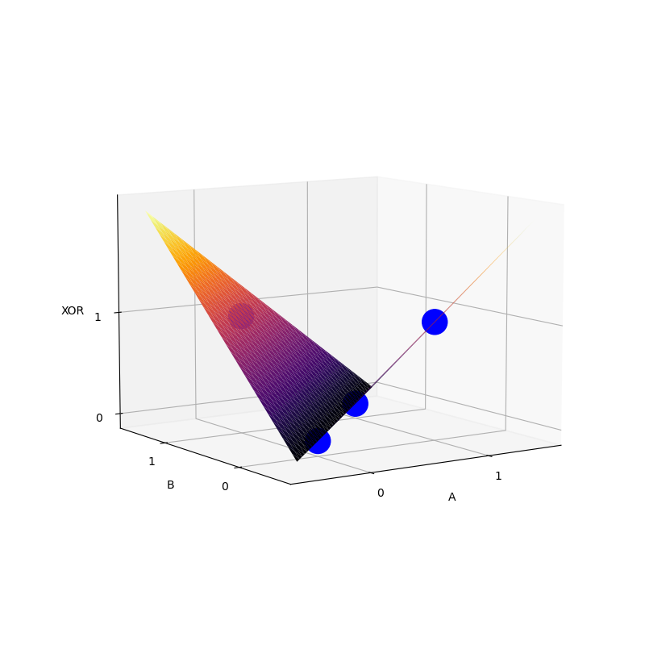

XOR problem
In learning a new field I don't think an introduction using the most basic example doesn't help. Using the XOR problem to understand deep learning often obscures the grander picture. That being said, I'm not sure who this explanation is for. At the moment, myself. Why? To see how well I can explain the fundamental concepts of deep learning using a toy example.
A quick history lesson.
Perceptrons are functions that perform a linear operation followed by a non
linear function mapping. In general, taking inputs \(x_1, x_2, ..., x_n\) to an
output \(f(\sum_i^n {w_i x_i})\). Letting \(f(z)\) be a step function with value 1
if z > 0 else 0.
The problem here is that we are only able to find functions that are linearly separable.
Multilayer and differentiable activation functions
What we want to do is add non linearity to our input. By doing so we can transform our feature space for a linear model to learn.
The architecture
The network consists of two inputs \(x_1\) and \(x_2\), a hidden layer \(\textbf{h}= [h_1, h_2]\) and output \(y\)
Task
Find the parameters/weights \(\theta\) that minimize the error/loss between estimated function \(f\) and our estimate \(f^*\). We want our \(\theta\) values to produce an estimate as close to \(f^*\) as possible, or for the loss function L to be as close to zero.
The mean squared error
has a nice derivative,
i.e. the product of the summed difference and the change in our estimated function \(f(\textbf{x}; \theta)\) with respect to a change in \(\theta\)
Optimization, Gradient Descent
In thinking of our Loss function as a terrain, we want the coordinates that reaches the lowest valley.
We start at coordinates \(\theta_0\). How do we find the deepest valley? Intuitively, a natural step would to go in the direction with the steepest incline by a small \(\alpha\) sized step , \(-\alpha \nabla_{\theta}{L}\).
Taking the step, we arrive at a new coordinate \(\theta_1\). Repeating this process choose the direction with the steepest decline until we reach our destination.
\(\theta_{n+1} = \theta_{n} - \alpha \nabla_{\theta}{L}\)
Backpropagation
Going back to the XOR problem we have
The parameter \(\theta\) is made up of different weights \(\textbf W\) and \(\textbf w\) that the network will need to learn.
Thus
where y is our predicted value, \(y^*\) is the true value.
So
and
Activation Function
The most common non-linear function used in modern neural networks is the ReLU
or variations of it.
Its derivative
is easy to compute even though it is non differentiable at 0.
The sigmoid function
is used in binary classification problems with derivative
import numpy as np
X = np.array([[0, 0], [0, 1], [1, 0], [1, 1]])
Y = np.array([[0], [1], [1], [0]])
print(" A B | XOR(A,B)")
print("-----------------")
for i, bits in enumerate(X):
print(f" {bits[0]} {bits[1]} | {Y[i][0]}")
>> A B | XOR(A,B)
>> -----------------
>> 0 0 | 0
>> 0 1 | 1
>> 1 0 | 1
>> 1 1 | 0
def sigmoid(x):
""" non-linear function """
return 1.0 / (1.0 + np.exp(-x))
def dx_sigmoid(x):
return sigmoid(x) * (1. - sigmoid(x))
def relu(x):
return np.maximum(0, x)
def dx_relu(x):
return x * (x > 0)
def loss_fn(predicted, true):
return 0.5 * (predicted - true) ** 2
# 100 iterations
iterations = 10000
input_dim = X.shape[-1]
output_dim = Y.shape[-1]
lr = 0.1 # learning rate
hidden_dim = 2
W = np.random.uniform(size=(input_dim, hidden_dim))
w = np.random.uniform(size=(hidden_dim, output_dim))
activation_fn = relu
dx_activation_fn = dx_relu
for step in range(1, iterations+1):
# forward pass
# (4, 2) x (2, 2) -> (4, 2)
fc1 = X.dot(W)
# (4, 2)
hidden = activation_fn(fc1)
# (4, 2) x (2, 1) ==> (4, 1)
output = hidden.dot(w)
loss = loss_fn(output, Y)
if step % 1000 == 0:
print(f"Loss: {np.mean(loss):.6f} Step: {step}/{iterations}")
## backward pass
#(4x1)
error = output - Y
delta_hidden = error.dot(w.T) * dx_activation_fn(fc1)
## gradient descent
grad_w = hidden.T.dot(error)
w -= lr * grad_w
grad_W = X.T.dot(delta_hidden)
W -= lr * grad_W
>> Loss: 0.000012 Step: 1000/10000
>> Loss: 0.000003 Step: 2000/10000
>> Loss: 0.000001 Step: 3000/10000
>> Loss: 0.000001 Step: 4000/10000
>> Loss: 0.000000 Step: 5000/10000
>> Loss: 0.000000 Step: 6000/10000
>> Loss: 0.000000 Step: 7000/10000
>> Loss: 0.000000 Step: 8000/10000
>> Loss: 0.000000 Step: 9000/10000
>> Loss: 0.000000 Step: 10000/10000
for i, prediction in enumerate(output):
print(f'predicted {prediction[0]:.5f} => true {Y[i][0]}')
>> predicted 0.00000 => true 0
>> predicted 1.00000 => true 1
>> predicted 1.00000 => true 1
>> predicted 0.00084 => true 0
print(W)
print(w)
>> (array([[-0.85018314, 0.80808135],
>> [ 0.85056309, -0.80776054]]),
>>
>> array([[1.1756913 ],
>> [1.23749876]]))
plot
from matplotlib import pyplot as plt
from mpl_toolkits.mplot3d import Axes3D
from matplotlib import cm
def xorNet(x):
fc1 = x.dot(W)
hidden = relu(fc1)
out = hidden.dot(w)
return out
xx, yy = X[:,0], X[:,1]
z = Y.T[0]
def splot(ax3d, nticks=101):
"""surface plot of the xor outputs of
the self.net for a mesh grid inputs of a and b:"""
i = np.linspace(-0.5,1.5,nticks)
a,b = np.meshgrid(i,i)
ab = np.stack([a,b],axis=-1)
xor = xorNet(ab)
xor.shape = (nticks,nticks)
ax3d.clear()
fn = ax3d.plot_surface(a,b,xor,cmap='inferno',)#edgecolor='none')
ax3d.view_init(elev=30,azim=-60)
ax3d.set_xticks([0,1]),ax3d.set_xlabel('A')
ax3d.set_yticks([0,1]),ax3d.set_ylabel('B')
ax3d.set_zticks([0,1]),ax3d.set_zlabel('XOR')
plt.draw()
plt.pause(0.05)
fig = plt.figure(figsize=(8,8))
ax3d = plt.axes(projection='3d')
splot(ax3d)
ax3d.scatter(xx, yy, z, color= "blue", s=500, marker='o', alpha=1)
plt.show()
